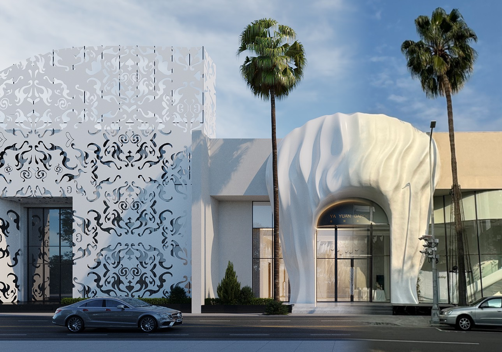
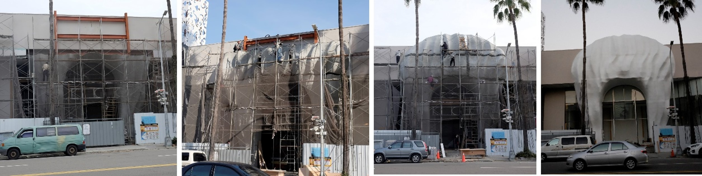
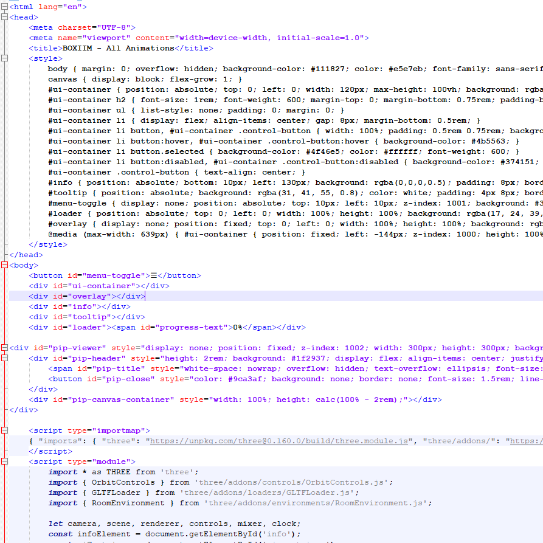
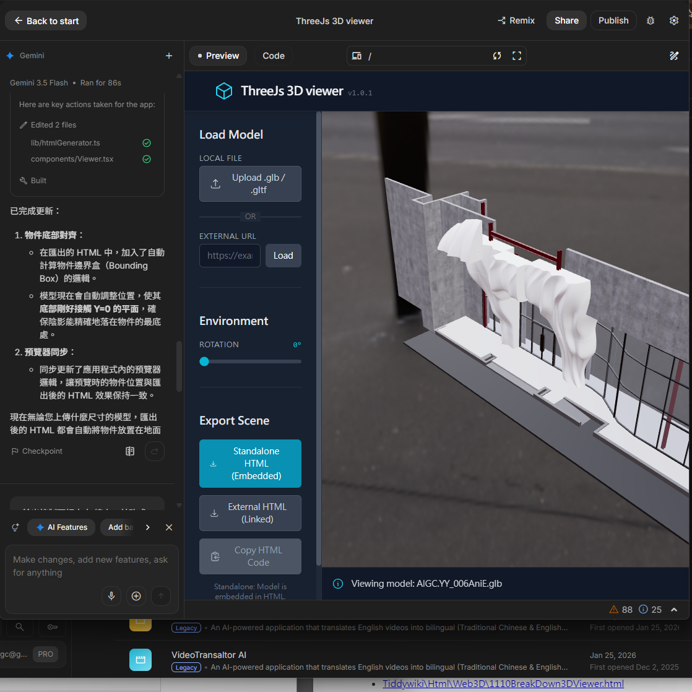
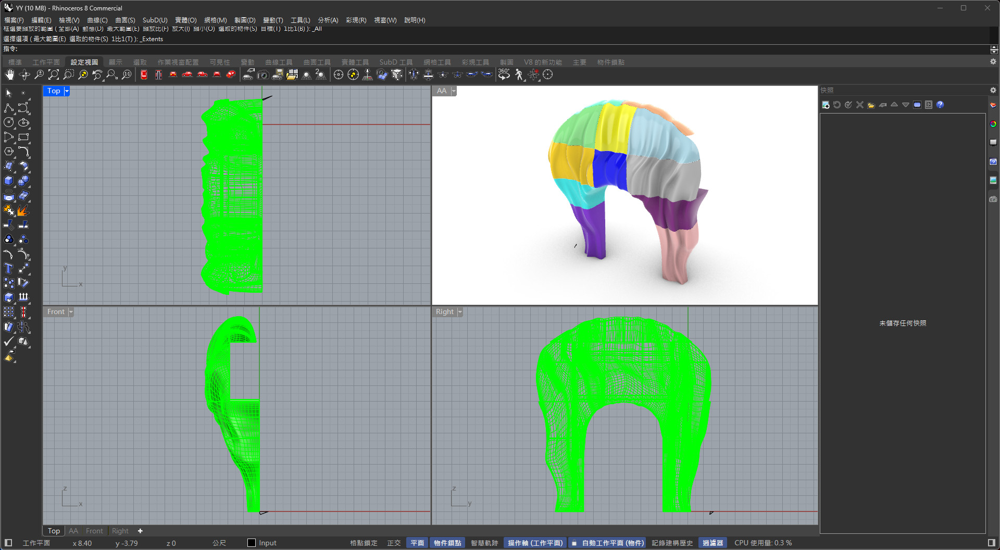
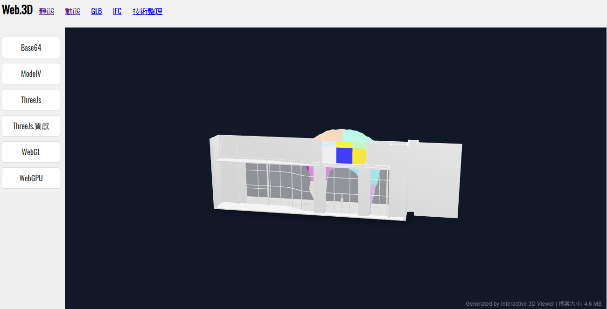

這次主題不是單純介紹 AIGC應用，而是討論 AIGC 進入工程流程後，如何成為可執行、可驗證、可展示的建築資訊工作流。
林明凱，朝陽科大視傳系，數位設計顧問。
從 2023/12/06 到 2024/01/10，聚焦 AIGC 工程落地。
以建築資訊、模型轉換與 Web3D 展示作為驗證場域。

當繪圖工具由 2D 轉為 3D，當溝通工具由圖紙轉為手機或 iPad，工程過程中許多圖面與環節會暴露出不夠明確的問題。Web3D 的價值，就是讓模型、流程與時間關係可以被操作與討論。
從平面圖面轉向模型資訊，理解方式也必須改變。
溝通場域轉到手機、iPad 與瀏覽器，互動介面成為核心。
模型與施工階段必須能被旋轉、放大、播放與回看。
建築資訊可視化的核心不只是展示完成品，而是把時間、組合關係與施工階段轉成可理解的序列。
2022/11/30 ChatGPT 問世之後，AIGC 從文字與圖像生成快速擴展到程式、模型、資料處理與工程協作。本研究重點，是把這股能力透過 Web3D 應用於建築資訊展示。
Web3D 展示不是單一路線。Model-Viewer 適合快速模型檢視；Three.js、WebGL 與 WebGPU 則適合更深入的材質、相機、時間軸與動態控制。
承載互動展示頁與 reveal.js 簡報。
快速嵌入 GLB，適合模型檢視。
控制材質、相機、動畫與時間軸。
對應瀏覽器端 3D 渲染能力。

AI-assisted programming 的價值在於把 Web3D viewer 的開發轉為提示詞、程式碼、測試、修正的快速迭代流程，讓非純前端背景者也能建立可展示原型。

從 IFC 到 Blend 再到 GLB 的流程，是讓 BIM 模型進入 Web3D 的關鍵橋梁。研究缺口在於如何降低模型轉換與展示製作門檻，並建立可重複的工作流。
建築資訊模型與 OpenBIM 語意來源。
模型整備、材質、階段與資料處理。
瀏覽器端可用的 3D 模型載體。
進入 reveal.js 與網站展示。

最後的交付不只是 PPT，而是能在網站中開啟、嵌入、滿畫面展示的 Web3D 簡報。下一頁直接內嵌 Journal_Index_Web3D.html，作為 PP02 的第二層展示入口。
